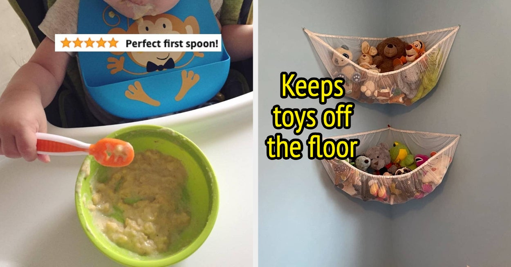

The Essential Parenting Guide: 44 Products That Parents Swear By

An Exhaustive List of Reviews-Backed Parenting Products
Parenting is hard. It's one of the most fulfilling, wonderful things you can do. But it can also be highly challenging and tough to navigate. Luckily, we live in the golden age of products... meaning there are many, many items out there that can help make your life easier as a parent.
Here's a roundup of the 44 parenting products that parents swear by!
- Garmin Vivofit Jr 2
- Kiinde Breast Milk Storage System
- Melatonin Gummies for Kids
- Safety 1st Grow and Go 3-in-1 Car Seat
- Vicks Warm Mist Humidifier
- Crayola Ultra-Clean Washable Markers
- Playtex Diaper Genie Complete
- Boon Flair High Chair
- Baby Brezza Formula Pro Advanced
- Munchkin Miracle 360 Trainer Cup
- Pampers Swaddlers Diapers
- Britax Boulevard ClickTight Convertible Car Seat
- Mommy's Bliss Gripe Water
- Philips Avent Soothie Pacifier
- Nest Security Camera for Indoor Use
- Ubbi Steel Diaper Pail
- Hatch Baby Rest Sound Machine
- Boppy Original Newborn Lounger
- Angelcare Bath Support
- Pampers Pure Diapers
- Graco Pack ‘n Play Playard
- Love to Dream Swaddle Up
- 4Moms Mamaroo
- Organic Bamboo Toddler Pillow
- WubbaNub Pacifier
- TempTraq Wearable Thermometer
- Shark Navigator Lift-Away Professional Vacuum
- Lansinoh Smart Pump
- Owlet Smart Sock
- Stokke Tripp Trapp High Chair
- Thermos Foogo Vacuum Insulated Stainless Steel 10-Ounce Straw Bottle
- Tula Toddler Carrier
- DockATot Deluxe+ Dock
- Kidkraft Uptown Espresso Kitchen
- Baby Delight Go With Me Chair
- Summer Infant Pop N' Jump
- Baby Merlin's Magic Sleepsuit
- Infant Optics Video Baby Monitor
- Mommy's Helper Outlet Plugs
- Clek Foonf Convertible Car Seat
- Baby Jogger City Mini GT2 Stroller
- BabyBjorn Bouncer Balance Soft
- Baby Delight Snuggle Nest
These products come from a mixture of categories including feeding, sleeping, safety, travel, and playtime. They're all highly-rated by reviewers who love how much easier they make daily life with children.
Here are some of the reasons reviewers love these products:
- Helpful for kids with sleep issues
- Work wonderfully for picky eaters
- Make travel a breeze
- Improve safety in the home
- Great for those with active infants/toddlers
and Case Studies
One reviewer, a father of twins, claimed that feeding was a major challenge for them. The Kiinde Breast Milk Storage System helped them feel in control. Another mother noted that her daughter slept better than ever after she began using the Magic Sleepsuit, sleeping longer and snoring less.
A mother of four states that the DockATot changed her life, providing a "safe, comfortable, and portable" place for her newborn to sleep. For many reviewers, the Owlet Smart Sock brought them immense peace of mind during stressful nights, and the Mommy's Bliss Gripe Water was a lifesaver during colicky episodes.
Conclusion: How These Products Can Help Parents
Ultimately, there are many products out there that can help parents with the challenging job of raising young children. The 44 items listed above come highly recommended by parents who have used them and seen their effectiveness.
- They can make daily tasks like feeding and sleeping less stressful
- They can improve safety in the home and while traveling
- They can provide peace of mind, knowing that your baby or toddler is comfortable and secure.
Reference URLs and Hashtags
- URLs:
- Hashtags:
- #parentingproducts
- #parentingsolutions
- #babygear
- #momlife
- #dadlife
- SEO Keywords: parenting products, parenting solutions, baby gear, mom life, dad life, kids, babies, infants, toddlers, safety, feeding, sleeping, travel, playtime
- Article Category: Parenting Tips and Advice
Curated by Team Akash.Mittal.Blog
Share on Twitter Share on LinkedIn